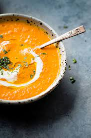

Carrot soup

This easy carrot soup recipe is a great way to use up a bag of carrots that were forgotten in your produce drawer
Ingredients
- 2 tablespoons extra virgin olive oil
- 1 small onion, minced
- 1 small carrot, peeled and thinly sliced
- 1 celery rib, thinly sliced
- 1/2 teaspoon dried tarragon
- 2 cups vegetable broth
- 1/2 cup dry white wine
Steps
- Heat extra-virgin olive oil in a medium saucepan over medium-high heat. Sauté onion in hot oil until tender, about 5 minutes. Stir in carrot, celery, and tarragon; cook, stirring occasionally, until carrots are tender, about 5 more minutes.
- Pour in broth and wine; bring to a boil. Reduce heat and simmer for 15 minutes. Serve hot.
Nutritional facts
Per serving- 235kcal, 14g of fat, 14g of carbs, 2g of protein